User Guide for ER | Visualizer
Emergency Room Simulation
Description
- visualizER is an Emergency room simulator which provides medical professionals and researchers a way to visualize the impact of workflow changes in the emergency room.
- Can be used by medical professionals to find the bottlenecks in the emergency room where they should allocate more resources.
- Can be used by Researchers to test the efficiency of hypothetical hospital workflows.
- Changes on an actual workflow are not feasible in a real working environment since it would require overwhelming amounts of hospital downtime in order to add and rearrange processes in the hospital.
Key Features
- Visual Representation of the emergency room workflow: Users can create nodes representing hospital stations(e.g. reception, triage, patient-doctor interaction, x-ray machine) and create paths between those nodes to represent the ability for patients to go between stations. The positions of patients are represented by queues(e.g. lineups) at each station.
- Live Visualization of patient flow through the ER: users can see how patients move from station to station, and where bottlenecks appear.
- Statistics Report: All statistics (e.g. actual wait times) on Emergency Room performance, patient wait times are recorded and saved to a CSV.
System Requirements for Windows
- Windows 10 64-bit: Pro, Enterprise, or Education (Build 15063 or later)
- Hyper-V and Containers Windows features must be enabled
-
This can be done by running the docker application after installing. The user will be prompted and required to restart the computer in order to finish the required setup.
-
The following hardware prerequisites are required to successfully run Client Hyper-V on Windows 10:
-
64 bit processor with Second Level Address Translation (SLAT)
- 4GB system RAM
- BIOS-level hardware virtualization support must be enabled in the BIOS settings (see image).

Installing and running Docker Desktop on Windows
-
Double-click Docker Desktop Installer.exe to run the installer.
-
If you haven’t already downloaded the installer (Docker Desktop Installer.exe), you can get it from Docker Hub. It typically downloads to your
Downloadsfolder, or you can run it from the recent downloads bar at the bottom of your web browser. -
Follow the instructions on the installation wizard to accept the license, authorize the installer, and proceed with the install.
-
When prompted, authorize the Docker Desktop Installer with your system password during the install process. Privileged access is needed to install networking components, links to the Docker apps, and manage the Hyper-V VMs.
-
Click Finish on the setup complete dialog and launch the Docker Desktop application.
System Requirements for Mac OS
-
Mac hardware must be a 2010 or newer model, with Intel’s hardware support for memory management unit (MMU) virtualization, including Extended Page Tables (EPT) and Unrestricted Mode. You can check to see if your machine has this support by running the following command in a terminal: sysctl kern.hv_support
-
macOS must be version 10.13 or newer. We recommend upgrading to the latest version of macOS.
-
If you experience any issues after upgrading your macOS to version 10.15, you must install the latest version of Docker Desktop to be compatible with this version of macOS.
Note: Docker supports Docker Desktop on the most recent versions of macOS. That is, the current release of macOS and the previous two releases. As new major versions of macOS are made generally available, Docker will stop supporting the oldest version and support the newest version of macOS (in addition to the previous two releases).
-
At least 4 GB of RAM.
-
VirtualBox prior to version 4.3.30 must not be installed as it is not compatible with Docker Desktop.
Installing and running Docker Desktop on Mac
-
Double-click Docker.dmg to open the installer, then drag the Docker icon to the Applications folder.
-
Install Docker app
-
Double-click Docker.app in the Applications folder to start Docker. (In the example below, the Applications folder is in “grid” view mode.)
You are prompted to authorize Docker.app with your system password after you launch it. Privileged access is needed to install networking components and links to the Docker apps.
The Docker menu in the top status bar indicates that Docker Desktop is running, and accessible from a terminal.
If you just installed the app, you also get a message with suggested next steps and a link to the documentation. Click the Docker menu (whale menu) in the status bar to dismiss this pop-up notification.
-
Click the Docker menu to see Preferences and other options.
-
Select About Docker to verify that you have the latest version.
Application Setup
- Download the docker installer here and follow the docker setup instructions above. The website directs you to the correct version base on your OS
- Then, start the application by double clicking the docker icon in your Applications folder.
Running the Application
Run ./run_prod.sh build - to build the image/run the application in production.
- The client and server services will be instantiated with the ports indicated in the .env file.
- The client can be accessed at http://localhost:5000 by default.
Note: you do not have to worry about any other setup either than ensuring you have docker on your device.
In the event that you have issues due to conflicting ports, you can change the values of the following port variables in the env file (located at the root of the repository).
APP_SERVER_PORT = {Backend port number - default 8000}
REACT_APP_PORT = {Frontend port number - default 5000}
DEV_ENV = development
WEB_SOCKET_PORT = {WSS port number - default 8765}
Using the Application
- Once the application begins (your terminal should look the same as the image above), go to http://localhost:5000.
-If you are using another port - based on REACT_APP_PORT that you have in your .env file. Then, a blank canvas will be presented where the hospital workflow can be created using different click operations.
- Users who have used the application before may choose to upload a saved canvas file to quickly load a previously used workflow.
- Hospital processes (e.g. reception, triage, scans) can be made by simply clicking on the add node button. The user can then enter the necessary properties of the process.
- Clicking a process on the screen will allow the user to view and edit its properties.
- To specify the processes to which the patient will travel, click the "add edges" button on the top right. Then, click the outbound process followed by the inbound process.
- Once a user finishes creating the workflow, they can choose to save the layout into a file for future use, before uploading a csv file for the patient information.
- After the patient csv file is loaded, the simulation can start.
- As the simulation runs, the user can click on a process and see the number of patients currently in the queue for that process. The number of patients in each acuity will also be displayed.
Customizing ports
The defaults for ports are indicated as such:
The backend APIs are at port 8000 indicated by APP_SERVER_PORT in the .env file. The client host port is 5000 indicated by REACT_APP_PORT in the .env file.
The values of the ports can be customized simply by changing the value in the .env file.
This can be used to test our simulation's API to view the final statistics without having to run the frontend since our frontend limitation is that you would have to run the entire visualization before getting the resulting statistics. This is also customizable in case the port on the user's computer is already in use by a separate application.
To switch from development to production,
change
DEV_ENV=development
to
DEV_ENV=production
Development environment has the following features: - Backend: - Activates the debugger - Activates the automatic reloader - Enables the debug mode on the Flask application. - Frontend: - Activates hot reloading - Directly serves files
Usage
Setup
How to create a node
- Click the "Add Node" button in the navigation bar. A node will appear on the screen that you position by can dragging around. The node's properties can be specified by clicking on it and modifying the fields in the sidebar which opens. 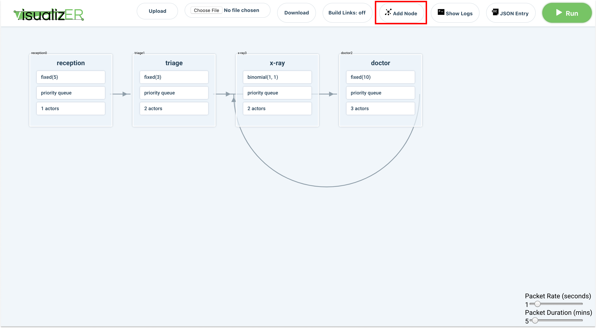
How to delete a node
- Click on a node. A side panel should appear. Scroll to the bottom and click on the "delete" button. 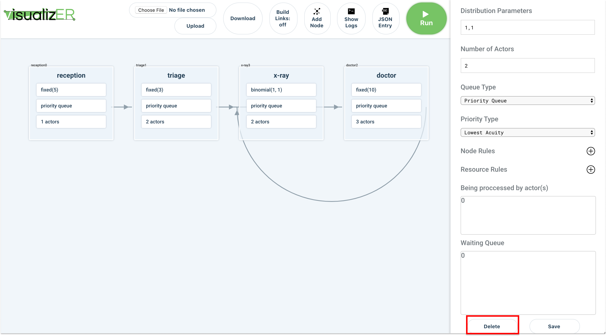
How to create a link
- In the navigation bar, click on the "build links: off" toggle button.
This should turn the button on to say: "build links: on".
Click on the node you want to be the parent.
Then click on the node you want to be the child. This will create a link between the parent and child node. When you are finished click on the "build links: on" button to turn off link building. This last step is important so that when you click on nodes you aren't accidentally building links. 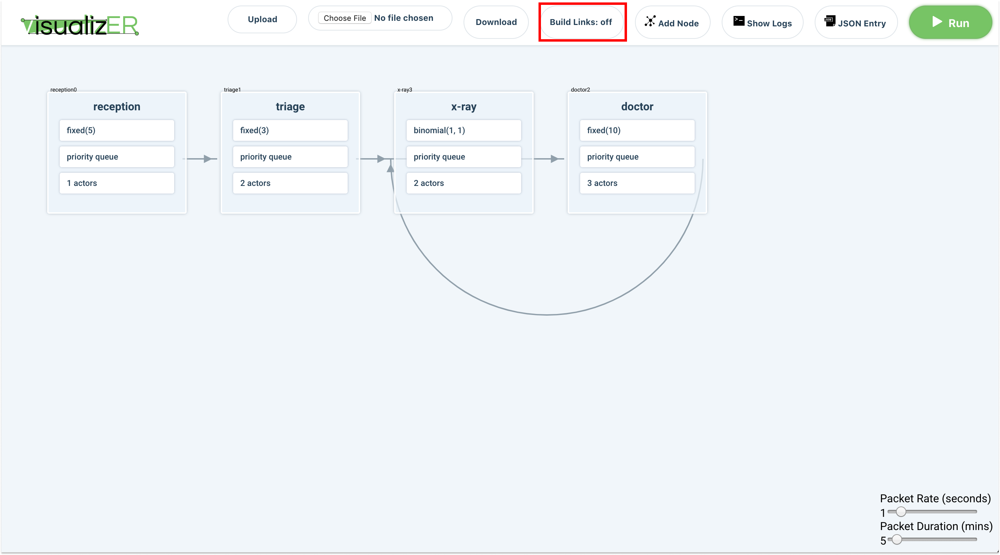
How to delete a link
- Click on the link you want to delete and, in the sidebar, click "Delete edge". 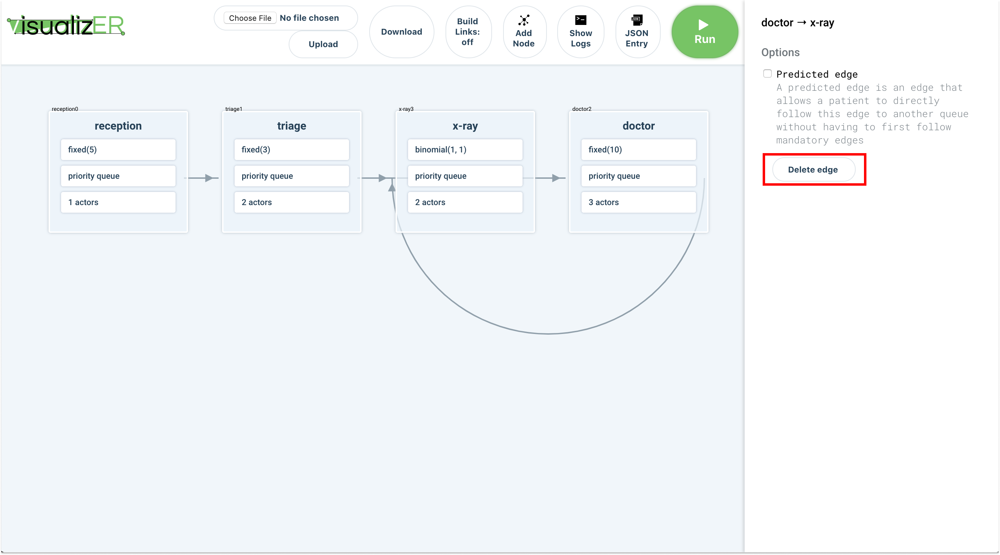
How to add a predicted edge
- Create a link. Click on the link and, in the sidebar, toggle "Predicted Edge". Predicted edges will appear as dashed lines in the user interface. 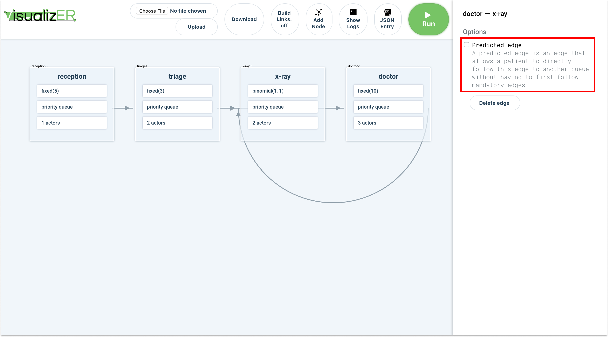
How to manually enter a custom JSON
- Open the JSON entry and clear the entry box. Paste in your custom JSON and press submit. 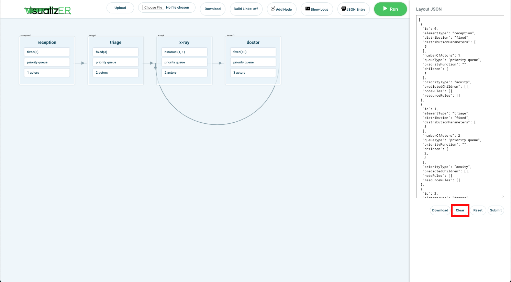 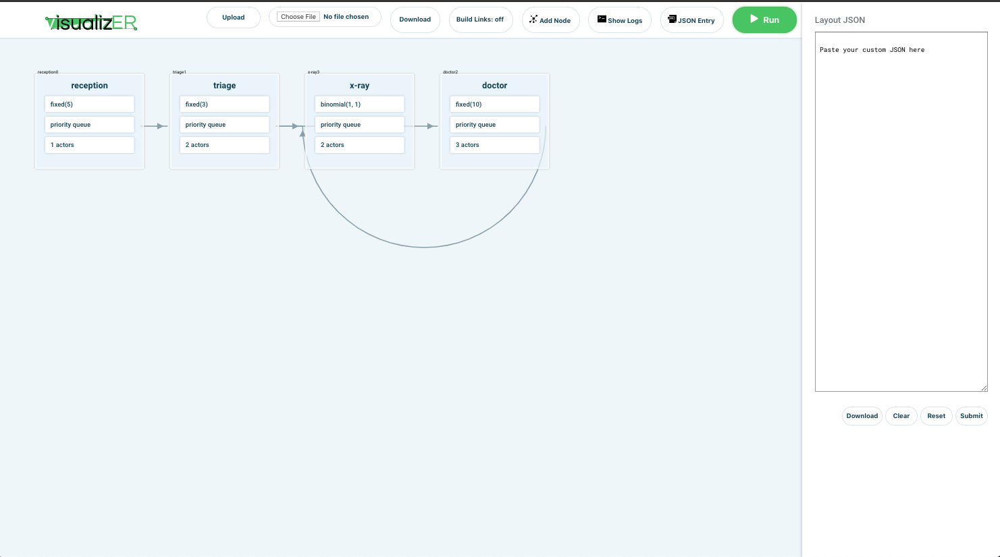 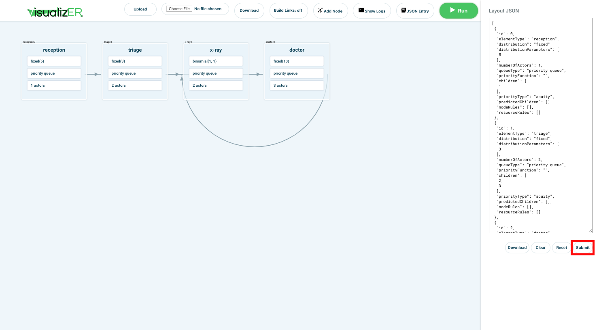
How to upload a csv
- Click on the "choose file" button. Select your csv file. Then click on the upload button to use the CSV file. 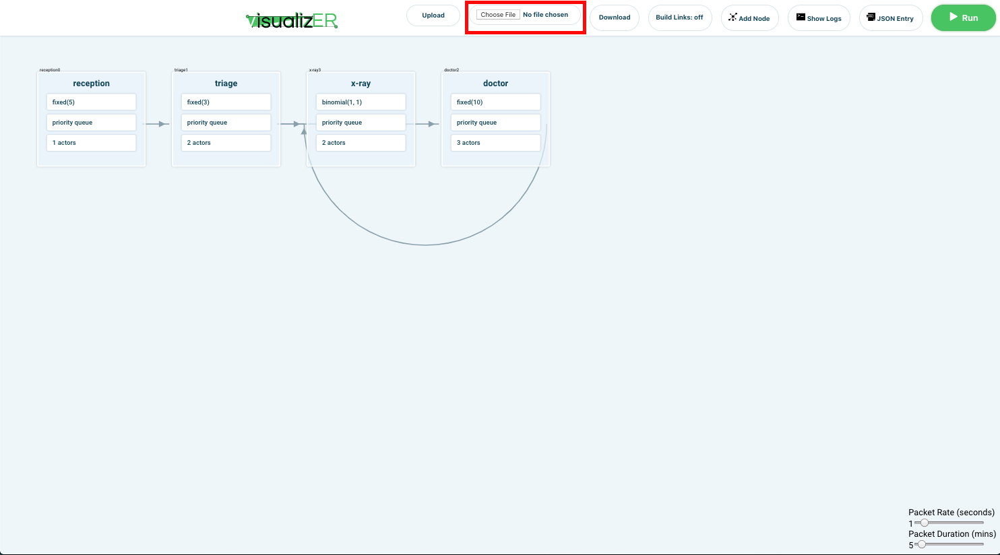
Adding rules
- Click on a node that you want to add a rule to. You can add both node rules and resource rules. For each node rule that you add, you have to specify a column name, which corresponds to the column name in the CSV file uploaded. 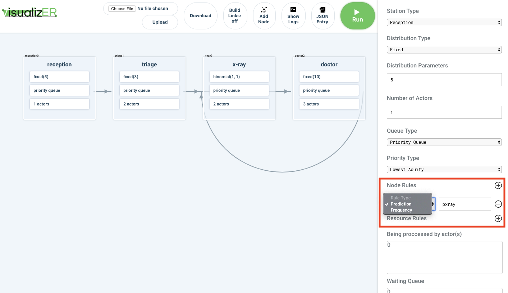
Modifying the simulation speed
- At the bottom right of the canvas, there are two sliders that you can modify.
Packet rate is used to control how often data is sent from the backend to the
frontend. Packet duration controls how much time passes in the simulation.
For example, if packet rate is set to 1 and the packet duration is set to 5,
then the frontend will be updated every second with 5 minutes of simulation data.
Note: This has to be set before starting the simulation 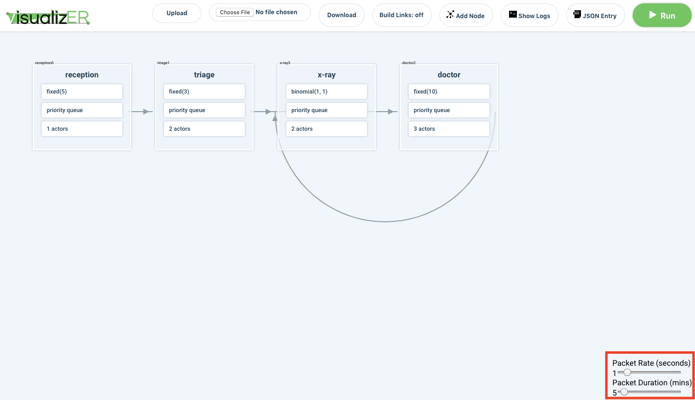
How to run simulation
- Once process nodes have been set up and a patient CSV has been uploaded, press the Run button. 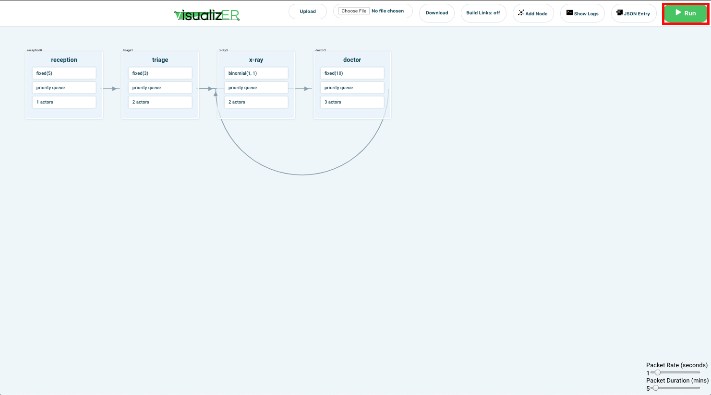
How to get statistics
- After the simulation has completely finished running, you can download the statistics for the simulation by clicking on the "download" button in the navigation bar.
CSV
- Each row represents 1 patient, and each column its attributes
- Must have columns with following names(outlined in global_strings.py):
- time: Indicates the start_time of the patient, i.e when the patient comes into the hospital.
- All patients must be sorted by time in chronological order from patient who arrives at hospital first, to patients who arrive at hospital last.
- id: id of the simulation object(patient in this case). Id must be unique
- acuity: 1-5.
- For predicted columns, values must be: {1 for True, 0 for False}
- For frequency columns, values must be: >= 0
FAQ
- Q: Does the json in the custom JSON area update the doc
- A: Yes, once you click Submit
- Q: How can I save the positions of the nodes?
- A: Copy the custom JSON code for the graph by clicking on the "JSON Entry" button. The JSON will contain the x, and y coordinates for each node, so that when you reinput the json into the JSON entry form, the nodes will be placed back in the position you set them to.
- Q: Do the node id's have to be unique?
- A: Yes
- Q: What do the numbers in the square brackets ([])
in the logs mean?
- A: They represent an integer timestamp for each logline.
- Q: What do the numbers on the squares represent?
- A: The id of the patient, the squares are individual patients, and their color represents their acuity where red means actuity level 1 and acuity increases as the color gets lights so light red has a higher acuity than dark red.